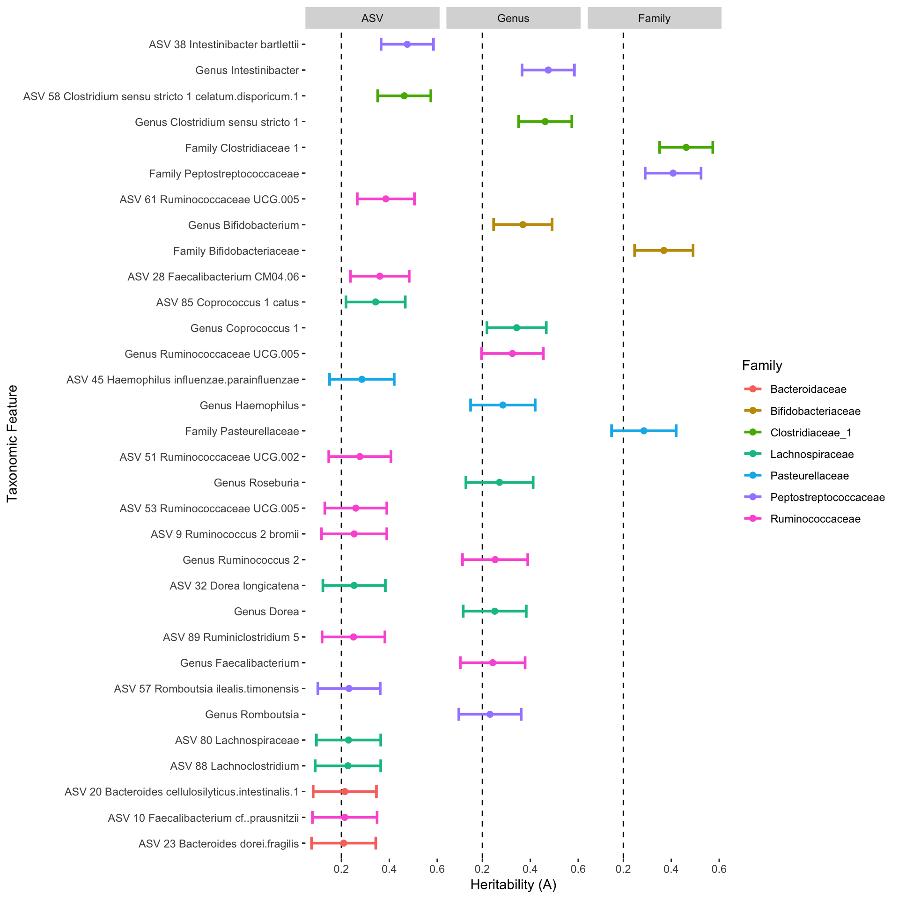

Import the phyloseq object.
ps <- readRDS("/Users/daniel/R_packages/mherit/data/twins_ps.rds")Since some twins have mutliple samples, I’ll first de-duplicate the subjects. In the future, this may be added to a function as an optional check (i.e. checking to make sure twins’ samples were collected on the same day, etc.).
samples_to_keep <- get_variable(ps, "Sample_ID")[!duplicated(get_variable(ps, "Subject_ID"))]
ps <- subset_samples(ps, Sample_ID %in% samples_to_keep)For the sake of speeding up this demonstration, next I’ll select 400 twin pairs at random to focus on.
n <- 400
set.seed(8675309)
families_to_keep <- sample(unique(get_variable(ps, "Family_ID")), n)
ps <- subset_samples(ps, Family_ID %in% families_to_keep)Remove taxa not seen at least once in at least 50% of the samples.
ps <- filter_taxa(ps, function(x) sum(x >= 1) > (0.50*length(x)), TRUE)
ps
#> phyloseq-class experiment-level object
#> otu_table() OTU Table: [ 102 taxa and 691 samples ]
#> sample_data() Sample Data: [ 691 samples by 41 sample variables ]
#> tax_table() Taxonomy Table: [ 102 taxa by 8 taxonomic ranks ]
#> refseq() DNAStringSet: [ 102 reference sequences ]This leaves us with 691 samples and 102 taxa.
Lets check the how many MZ and DZ twins we are left with.
table(get_variable(ps, "Zygosity"))
#>
#> MZ DZ
#> 390 301Ok, not bad.
Now I can use the add_ranks() function to add higher taxonomic levels to the phyloseq object. For now I’ll just add the Family and Genus levels, but if you leave ranks empty, it’ll use all of the ranks available in the tax_table().
ps <- add_ranks(ps, ranks = c("Family", "Genus"))
#> ASV names have been replaced.
#> WARNING: The phy_tree() and/or refseq() in your phyloseq object will be removed.
#> Agglomerated by Genus (n = 47).
#> Agglomerated by Family (n = 19).
#> Replacing invalid charaters in taxa_names() with .You can see that there are now taxonomic features present in the dataset that are higher than ASVs.
sample(taxa_names(ps), 10)
#> [1] "ASV_79_CAG.56"
#> [2] "ASV_8_Escherichia.Shigella"
#> [3] "ASV_89_Ruminiclostridium_5"
#> [4] "ASV_23_Bacteroides_dorei.fragilis"
#> [5] "Family_Akkermansiaceae"
#> [6] "ASV_59_Lachnospira"
#> [7] "ASV_80_Lachnospiraceae"
#> [8] "Genus_Coprococcus_3"
#> [9] "Genus_Bilophila"
#> [10] "ASV_53_Ruminococcaceae_UCG.005"If we take a look at the abundances of the first 2 taxa in the fist 5 samples, we can see this is count data (integers).
otu_table(ps)[1:5, 1:2]
#> OTU Table: [2 taxa and 5 samples]
#> taxa are columns
#> ASV_1_Bacteroides_vulgatus ASV_2_Bacteroides_dorei.vulgatus
#> High1.13 0 2972
#> High1.17 835 0
#> High1.18 3938 0
#> High1.19 1793 2091
#> High1.1 1577 4661To make the data more normally distributed, I’ll use the normalize_for_heritability() function to perform the Box-Cox transformation and then regress on a few covariates in my sample_data(). Notice that Height is not in the sample_data(). The output phyloseq object contains the residuals from the linear regression. In this functions and all of the functions in this package, you can set verbose = FALSE to suppress the message.
ps <- normalize_for_heritability(ps, covariates = c("Host_Age", "Host_Sex", "Height"), verbose = TRUE)
#> Adding pseduocount (+1) to ASV table.
#> Transforming ASV table to relative abundances.
#> Covariates found:
#> Host_Age (class: integer, centered and scaled)
#> Host_Sex (class: factor)
#> Height not found in sample_variables(), and will be ignored.
#> Modeling Feature: ASV_1_Bacteroides_vulgatus
#> Modeling Feature: ASV_2_Bacteroides_dorei.vulgatus
#> Modeling Feature: ASV_3_Bacteroides_uniformis
#> Modeling Feature: ASV_4_Bacteroides_uniformis
#> Modeling Feature: ASV_5_Akkermansia_muciniphila
#> Modeling Feature: ASV_6_Agathobacter
#> Modeling Feature: ASV_7_Alistipes_putredinis
#> Modeling Feature: ASV_8_Escherichia.Shigella
#> Modeling Feature: ASV_9_Ruminococcus_2_bromii
#> Modeling Feature: ASV_10_Faecalibacterium_cf..prausnitzii
#> Modeling Feature: ASV_11_Christensenellaceae_R.7_group
#> Modeling Feature: ASV_12_Subdoligranulum
#> Modeling Feature: ASV_13_Blautia_obeum.provencensis.1
#> Modeling Feature: ASV_14_Ruminococcaceae_UCG.002
#> Modeling Feature: ASV_15_Parabacteroides_merdae
#> Modeling Feature: ASV_16_Faecalibacterium_prausnitzii
#> Modeling Feature: ASV_17_Bacteroides_caccae
#> Modeling Feature: ASV_18_Alistipes_finegoldii.onderdonkii
#> Modeling Feature: ASV_19_Bacteroides_faecichinchillae.faecis.2
#> Modeling Feature: ASV_20_Bacteroides_cellulosilyticus.intestinalis.1
#> Modeling Feature: ASV_21_Fusicatenibacter_saccharivorans
#> Modeling Feature: ASV_22_Bacteroides_fragilis.ovatus.1
#> Modeling Feature: ASV_23_Bacteroides_dorei.fragilis
#> Modeling Feature: ASV_24_Anaerostipes_hadrus
#> Modeling Feature: ASV_25_Bifidobacterium_adolescentis.faecale.2
#> Modeling Feature: ASV_26_Erysipelotrichaceae_UCG.003
#> Modeling Feature: ASV_27_Subdoligranulum
#> Modeling Feature: ASV_28_Faecalibacterium_CM04.06
#> Modeling Feature: ASV_29_Bacteroides_fragilis.ovatus
#> Modeling Feature: ASV_30_Blautia_massiliensis
#> Modeling Feature: ASV_31_Bacteroides_fragilis.ovatus
#> Modeling Feature: ASV_32_Dorea_longicatena
#> Modeling Feature: ASV_33_Lachnospiraceae_NK4A136_group
#> Modeling Feature: ASV_34_Alistipes_inops
#> Modeling Feature: ASV_35_Lachnospiraceae
#> Modeling Feature: ASV_36_Ruminococcaceae_UCG.002_bacterium
#> Modeling Feature: ASV_37_Roseburia_inulinivorans
#> Modeling Feature: ASV_38_Intestinibacter_bartlettii
#> Modeling Feature: ASV_39_Agathobacter
#> Modeling Feature: ASV_40_Blautia_faecis
#> Modeling Feature: ASV_41_Alistipes_finegoldii
#> Modeling Feature: ASV_42_Lachnospiraceae_NK4A136_group
#> Modeling Feature: ASV_43_Alistipes_shahii
#> Modeling Feature: ASV_44_Ruminococcus_1_bicirculans
#> Modeling Feature: ASV_45_Haemophilus_influenzae.parainfluenzae
#> Modeling Feature: ASV_46_Roseburia_hominis
#> Modeling Feature: ASV_47_Ruminiclostridium_6
#> Modeling Feature: ASV_48_Blautia_obeum
#> Modeling Feature: ASV_49_Alistipes_obesi
#> Modeling Feature: ASV_50_Parasutterella_excrementihominis
#> Modeling Feature: ASV_51_Ruminococcaceae_UCG.002
#> Modeling Feature: ASV_52_Roseburia_intestinalis
#> Modeling Feature: ASV_53_Ruminococcaceae_UCG.005
#> Modeling Feature: ASV_54_Bifidobacterium_breve.kashiwanohense.2
#> Modeling Feature: ASV_55_Coprococcus_3_comes
#> Modeling Feature: ASV_56_Lachnospiraceae
#> Modeling Feature: ASV_57_Romboutsia_ilealis.timonensis
#> Modeling Feature: ASV_58_Clostridium_sensu_stricto_1_celatum.disporicum.1
#> Modeling Feature: ASV_59_Lachnospira
#> Modeling Feature: ASV_60_Lachnospiraceae
#> Modeling Feature: ASV_61_Ruminococcaceae_UCG.005
#> Modeling Feature: ASV_62_Lachnospiraceae
#> Modeling Feature: ASV_63_Alistipes_ihumii
#> Modeling Feature: ASV_64_Lachnospiraceae
#> Modeling Feature: ASV_65_Lachnospiraceae_ND3007_group
#> Modeling Feature: ASV_66_Streptococcus
#> Modeling Feature: ASV_67_Christensenellaceae_R.7_group
#> Modeling Feature: ASV_68_Lachnospiraceae
#> Modeling Feature: ASV_69_Lachnospira_pectinoschiza
#> Modeling Feature: ASV_70_Ruminococcaceae_UCG.013
#> Modeling Feature: ASV_71_Anaerostipes_hadrus
#> Modeling Feature: ASV_72_Bilophila_wadsworthia
#> Modeling Feature: ASV_73_Faecalibacterium
#> Modeling Feature: ASV_74_Ruminococcaceae_NK4A214_group
#> Modeling Feature: ASV_75_Lachnospiraceae
#> Modeling Feature: ASV_76_Christensenellaceae_R.7_group
#> Modeling Feature: ASV_77_Odoribacter_splanchnicus
#> Modeling Feature: ASV_78_Ruminococcaceae_UCG.003
#> Modeling Feature: ASV_79_CAG.56
#> Modeling Feature: ASV_80_Lachnospiraceae
#> Modeling Feature: ASV_81_UBA1819
#> Modeling Feature: ASV_82_Lachnoclostridium
#> Modeling Feature: ASV_83_Lachnospiraceae
#> Modeling Feature: ASV_84_Dorea_formicigenerans
#> Modeling Feature: ASV_85_Coprococcus_1_catus
#> Modeling Feature: ASV_86_Collinsella_aerofaciens
#> Modeling Feature: ASV_87_Blautia
#> Modeling Feature: ASV_88_Lachnoclostridium
#> Modeling Feature: ASV_89_Ruminiclostridium_5
#> Modeling Feature: ASV_90_Subdoligranulum
#> Modeling Feature: ASV_91_Agathobacter
#> Modeling Feature: ASV_92_Ruminiclostridium_5
#> Modeling Feature: ASV_93_Oscillibacter
#> Modeling Feature: ASV_94_Lachnospiraceae_NK4A136_group
#> Modeling Feature: ASV_95_Butyricicoccus
#> Modeling Feature: ASV_96_Flavonifractor_plautii
#> Modeling Feature: ASV_97_Family_XIII_AD3011_group
#> Modeling Feature: ASV_98_Lachnospiraceae
#> Modeling Feature: ASV_99_Lachnospiraceae_FCS020_group
#> Modeling Feature: ASV_100_Lachnoclostridium
#> Modeling Feature: ASV_101_Lachnospiraceae
#> Modeling Feature: ASV_102_Clostridia
#> Modeling Feature: Genus_Bacteroides
#> Modeling Feature: Genus_Akkermansia
#> Modeling Feature: Genus_Agathobacter
#> Modeling Feature: Genus_Alistipes
#> Modeling Feature: Genus_Escherichia.Shigella
#> Modeling Feature: Genus_Ruminococcus_2
#> Modeling Feature: Genus_Faecalibacterium
#> Modeling Feature: Genus_Christensenellaceae_R.7_group
#> Modeling Feature: Genus_Subdoligranulum
#> Modeling Feature: Genus_Blautia
#> Modeling Feature: Genus_Ruminococcaceae_UCG.002
#> Modeling Feature: Genus_Parabacteroides
#> Modeling Feature: Genus_Fusicatenibacter
#> Modeling Feature: Genus_Anaerostipes
#> Modeling Feature: Genus_Bifidobacterium
#> Modeling Feature: Genus_Erysipelotrichaceae_UCG.003
#> Modeling Feature: Genus_Dorea
#> Modeling Feature: Genus_Lachnospiraceae_NK4A136_group
#> Modeling Feature: Genus_Roseburia
#> Modeling Feature: Genus_Intestinibacter
#> Modeling Feature: Genus_Ruminococcus_1
#> Modeling Feature: Genus_Haemophilus
#> Modeling Feature: Genus_Ruminiclostridium_6
#> Modeling Feature: Genus_Parasutterella
#> Modeling Feature: Genus_Ruminococcaceae_UCG.005
#> Modeling Feature: Genus_Coprococcus_3
#> Modeling Feature: Genus_Romboutsia
#> Modeling Feature: Genus_Clostridium_sensu_stricto_1
#> Modeling Feature: Genus_Lachnospira
#> Modeling Feature: Genus_Lachnospiraceae_ND3007_group
#> Modeling Feature: Genus_Streptococcus
#> Modeling Feature: Genus_Ruminococcaceae_UCG.013
#> Modeling Feature: Genus_Bilophila
#> Modeling Feature: Genus_Ruminococcaceae_NK4A214_group
#> Modeling Feature: Genus_Odoribacter
#> Modeling Feature: Genus_Ruminococcaceae_UCG.003
#> Modeling Feature: Genus_CAG.56
#> Modeling Feature: Genus_UBA1819
#> Modeling Feature: Genus_Lachnoclostridium
#> Modeling Feature: Genus_Coprococcus_1
#> Modeling Feature: Genus_Collinsella
#> Modeling Feature: Genus_Ruminiclostridium_5
#> Modeling Feature: Genus_Oscillibacter
#> Modeling Feature: Genus_Butyricicoccus
#> Modeling Feature: Genus_Flavonifractor
#> Modeling Feature: Genus_Family_XIII_AD3011_group
#> Modeling Feature: Genus_Lachnospiraceae_FCS020_group
#> Modeling Feature: Family_Bacteroidaceae
#> Modeling Feature: Family_Akkermansiaceae
#> Modeling Feature: Family_Lachnospiraceae
#> Modeling Feature: Family_Rikenellaceae
#> Modeling Feature: Family_Enterobacteriaceae
#> Modeling Feature: Family_Ruminococcaceae
#> Modeling Feature: Family_Christensenellaceae
#> Modeling Feature: Family_Tannerellaceae
#> Modeling Feature: Family_Bifidobacteriaceae
#> Modeling Feature: Family_Erysipelotrichaceae
#> Modeling Feature: Family_Peptostreptococcaceae
#> Modeling Feature: Family_Pasteurellaceae
#> Modeling Feature: Family_Burkholderiaceae
#> Modeling Feature: Family_Clostridiaceae_1
#> Modeling Feature: Family_Streptococcaceae
#> Modeling Feature: Family_Desulfovibrionaceae
#> Modeling Feature: Family_Marinifilaceae
#> Modeling Feature: Family_Coriobacteriaceae
#> Modeling Feature: Family_Family_XIII
#> The otu_table() of the phyloseq output contains Box-Cox transformed residuals following linear regression.If you want, you can also add normalization_plots = TRUE and the function will output plots for each taxonomic feature showing the distribution before and after normalization.
Now if we check again, the data is no longer in count form.
otu_table(ps)[1:5, 1:2]
#> OTU Table: [2 taxa and 5 samples]
#> taxa are columns
#> ASV_1_Bacteroides_vulgatus ASV_2_Bacteroides_dorei.vulgatus
#> High1.13 -0.9132827 1.868976
#> High1.17 0.1409818 -2.030233
#> High1.18 0.5128513 -2.136537
#> High1.19 0.3554185 1.982479
#> High1.1 0.2403769 2.297000After I’m satisfied with the normalization, I can use the calculate_ACE() function to calculate the A.C.E. model. This function calls the twinlm function from the mets R package. We’ll also set verbose = FALSE to supress the long list of taxa, like above.
df <- calculate_ACE(ps, dz = "DZ", zygosity = "Zygosity", family_id = "Family_ID", verbose = FALSE)The output is a data.frame that contains all of the estimates of A, C, and E, as well as their taxonomy.
head(df, 3)
#> Kingdom Phylum Class
#> ASV_1_Bacteroides_vulgatus Bacteria Bacteroidetes Bacteroidia
#> ASV_2_Bacteroides_dorei.vulgatus Bacteria Bacteroidetes Bacteroidia
#> ASV_3_Bacteroides_uniformis Bacteria Bacteroidetes Bacteroidia
#> Order Family Genus
#> ASV_1_Bacteroides_vulgatus Bacteroidales Bacteroidaceae Bacteroides
#> ASV_2_Bacteroides_dorei.vulgatus Bacteroidales Bacteroidaceae Bacteroides
#> ASV_3_Bacteroides_uniformis Bacteroidales Bacteroidaceae Bacteroides
#> Species lowest_rank
#> ASV_1_Bacteroides_vulgatus vulgatus Bacteroides_vulgatus
#> ASV_2_Bacteroides_dorei.vulgatus dorei/vulgatus Bacteroides_dorei/vulgatus
#> ASV_3_Bacteroides_uniformis uniformis Bacteroides_uniformis
#> A_Estimate C_Estimate E_Estimate
#> ASV_1_Bacteroides_vulgatus 5.658374e-17 0.09304669 0.9069533
#> ASV_2_Bacteroides_dorei.vulgatus 3.272644e-15 0.04175862 0.9582414
#> ASV_3_Bacteroides_uniformis 1.337296e-15 0.04727433 0.9527257
#> A_2.5% C_2.5% E_2.5%
#> ASV_1_Bacteroides_vulgatus -8.004395e-09 -0.02080066 0.7931060
#> ASV_2_Bacteroides_dorei.vulgatus -1.185422e-07 -0.07290349 0.8435793
#> ASV_3_Bacteroides_uniformis -7.218176e-08 -0.06729814 0.8381532
#> A_97.5% C_97.5% E_97.5% rank
#> ASV_1_Bacteroides_vulgatus 8.004395e-09 0.2068940 1.020801 ASV
#> ASV_2_Bacteroides_dorei.vulgatus 1.185422e-07 0.1564207 1.072903 ASV
#> ASV_3_Bacteroides_uniformis 7.218176e-08 0.1618468 1.067298 ASVFinally we can plot the results.
p <- plot_heritability(df, cutoff = 0.2, color = "Family", verbose = TRUE)
#> Plot output contains 17 ASVs, 11 Genera, 4 Families.
p
Don’t pay too much attention to the names of the taxa being displayed in this figure. There is a lot of data curation that needs to be done that I am not showing here.
This is a work in progress, so please let me know if you run into any problems. Thank you!